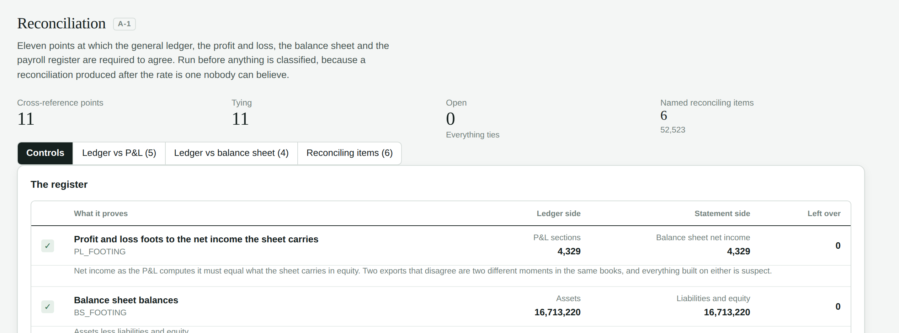
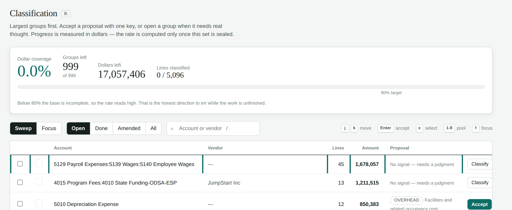

Prepared for Barb Ewing · 12 September 2026 · Youngstown Business Incubator
The system is built and proven, and the books now agree with themselves at every point we can test. What remains is judgment work: Tom classifying the year, three documents we have asked YBI for, and eighteen open questions only he can answer. None of it is software. All of it sits on one path that ends with the Single Audit and the Form 990.
| Built and proved | |
|---|---|
| Ledger lines loaded, proved to their own subtotals | 15,500 |
| Cross-reference control points tying | 11 of 11 |
| Differences left unexplained | 0.00 |
| Awards registered, with their clauses read in | 3 · 26 |
| Automated tests · permission boundaries | 589 · 68 |
| Still to come | |
|---|---|
| Expense classified | 0.0% |
| Decisions to make (top 200 carry 93.3%) | 999 |
| People who can certify their own effort | 6 of 43 |
| Assets with a funding source recorded | 0 of 263 |
| Buildings with square footage on file | none |
The idea the whole thing rests on: no rate can be computed until the classifications are sealed. An auditor will ask whether the rate was reached honestly or worked backwards from a number somebody wanted, and the answer has to be documentary rather than a promise — so the software physically refuses to produce one until every judgment is locked and hashed, and refuses again if the books do not first agree with themselves.

Nineteen discrepancies — eighteen open and one already settled — every one found by a control rather than by somebody reading, and every one answerable from what Tom already knows. Full detail in docs/FOR_TOM_TO_VERIFY.md.
The example, now confirmed. A pledge from Vince and Phyllis Bacon to fund interns was booked as a credit against intern wage expense rather than as contributions income. Ten of the eleven controls were blind to it — the entry is perfectly consistent with the ledger, the P&L and the balance sheet. Only the payroll register could see it. It made the fringe rate read 22.45% when the defensible figure is 21.90%. It is closed by naming it, not by adjusting anything. Still outstanding: the entry has not been reposted in QuickBooks.
| Group | What is at stake | Items |
|---|---|---|
| Depreciation | About three points of the indirect rate. Includes $157,739 of grant reimbursements netted against the cost of Tech Block Building 5 — if confirmed, the recorded cost understates the real basis and the federal share cannot be derived from the books at all. | 6 |
| The books | Whether Rising Tides is federally funded — $1,386,356 of expense, and it changes the scope of the Single Audit, not just a rate. Plus $451,170 the P&L calls Innovation Hub and the revenue ledger calls America Makes. | 4 |
| Space | Four buildings named once each in the lease book, one tenant across two of them, eight tenancies with no start date. | 4 |
| People | The payroll register identifies people by surname alone. Any two sharing one have had their hours joined together. | 1 |
| Invoices | The real dates on the three invoices we hold, whether any of the $57,961 has been paid — no cash is recorded against them — and the rest of the 2025 invoices, which are not on file at all. | 3 |
Each is a workbook with the answer half filled in already, built from documents YBI had already sent and nothing had ever read.
| Workbook | Already filled in | The ask |
|---|---|---|
| Fixed asset register | 263 assets with cost, dates, depreciation | which of them federal money paid for |
| Floor space | 26 tenancies with building and rent | square feet per suite |
| Employee roster | all 43 people from the payroll register | a working email address, and the hours each was employed to work |
The roster has the longest lead time and should start now. Thirty-seven of forty-three people cannot sign anything, because federal rules require the person whose effort it was to certify it themselves — a manager may not sign on their behalf. Collecting thirty-seven confirmed addresses takes weeks, and nothing else on this list can compress it.
Classification. Every expense is grouped by account and vendor, largest first; the top 200 groups carry 93.3% of the dollars and the top 100 carry 84.4%. For each, Tom records four things — which cost pool, which column of the Form 990, whether it is allowable federally, and if direct, which contract. The system proposes an answer where it has a real signal (about two-thirds of the dollars) and proposes nothing where it does not, rather than guessing. Anything unjudged stays out of the calculation, so the rate reads high while work is unfinished — the honest direction to be wrong.
Evidence. Each judgment carries a stated quality of support, from verified against a document on file down to management reconstruction. A judgment claiming the highest grade is refused unless a document is actually attached. The audit package prints the grade beside every figure, so a reviewer sees what is proven and what is asserted without asking.
Certification. Where a salary is charged across several contracts, 2 CFR 200.430(i) requires that person to certify their own effort. Every employee therefore gets a timesheet and a certification screen, managers get a list of who has not yet signed, and the system will not let anyone sign on somebody else's behalf. YBI's 2025 labour distribution is currently a careful reconstruction from calendars and project records — which is defensible, and is not a certification. Turning it into one needs the roster above; until then the audit package says so on its first page, above the figures.

The rates below are modelled from the analysis phase. They are not yet the system's numbers — it will not produce a rate until classification is sealed, which is the point of it. Treat them as the best estimate of where we land, with the range underneath.
| Building up a $100,000 salary | Rate | Amount |
|---|---|---|
| Salary | — | 100,000.00 |
| Fringe — payroll taxes, insurance, retirement, paid leave | 21.90% | 21,900.00 |
| Burdened labour | 121,900.00 | |
| Indirect — facilities 12.89% plus general and administrative 18.89% | 31.78% | 38,739.82 |
| Fully burdened cost | 160,639.82 | |
| Recovered today, at the 10% anyone may claim without a negotiated rate | 10.00% | 134,090.00 |
| Left on the table, per $100,000 of salary, every year | +19.8% | 26,549.82 |
That uplift applies to every labour dollar in every 2026 proposal YBI writes. The recurring rate is the prize; the one-off 2025 recovery is secondary. And the 10% line above is generous to the status quo: it is what YBI could claim without a negotiated rate. On the America Makes awards it currently recovers no indirect at all, because none of the approved budgets carries an indirect line.
| What could move it | Indirect | $100k employee |
|---|---|---|
| Recommended — propose this, expect to settle 28–30% | 31.78% | 160,640 |
| If one account — 5227 Portfolio consulting, $588,539 — is judged direct | 28.09% | 156,142 |
| If that same account is judged general and administrative | 44.90% | 176,633 |
One account swings the rate seventeen points and needs no outside document — only Tom's judgment. Sequence it first, ahead of everything waiting on YBI's filing cabinets.
YBI billed America Makes by dividing the approved budget by twelve. That method cannot see what was actually spent, and it produced errors in both directions — some awards over-billed, some substantially under-billed.
The central fact is an absence. Drive AM's approved budget names seven cost categories and funds five of them, against $583,594 of labour, and contains no indirect line at all. The invoice YBI issued carries exactly those five — three of them at zero — and no indirect line, because there was none to carry. That document is itself the record of what YBI was never budgeted to claim.
The likely path is a refactor, not a claim for more money. America Makes is expected to allow the invoices to be restructured so the correct rate stack appears inside them, provided the total does not exceed what was already invoiced. The agreement itself points the same way: the clause on file records that because no indirect line exists, any indirect recovered has to displace direct cost inside the ceiling. So indirect goes within the existing total rather than on top of it.
| Invoice 10018 — Drive AM, as issued and as it would be restated | As issued | Restated |
|---|---|---|
| Direct — labour and other direct cost | 37,593.90 | 28,527.77 |
| Indirect at 31.78%, inside the same total | — | 9,066.13 |
| Invoice total — unchanged | 37,593.90 | 37,593.90 |
What that is worth is not 2025 cash. It is three things: the sponsor accepting the rate as the basis, which is what makes it usable in 2026; invoices that state what the work actually cost instead of implying YBI incurred no overhead; and an audit exposure closed, because an invoice showing no indirect against $583,594 of budgeted labour is a question a reviewer will ask. One consequence to be clear-eyed about: displaced direct cost does not disappear — it becomes cost YBI carried and did not recover, which is worth capturing while the cost-share evidence is being assembled anyway.
The system does this invoice by invoice and records the arithmetic beside each. A restatement carries the seal of the rate it used, stays a proposal until the sponsor agrees in writing, and cannot be finalised without naming the clause that authorised the change of basis — §4.4 on both Hybrid and Last Tactical Mile requires a written modification signed by both parties.
| Contract ceilings, read from the agreements and on file | Federal | Authority |
|---|---|---|
| Drive AM | 1,103,594 | §4.3 Total Obligation |
| Last Tactical Mile | 899,500 | §4.3 Total Obligation |
| Hybrid Phase 2 | 512,409 | §4.2 as amended by Modification 001 |
| Digital Engineering | not registered | the executed agreement is on file; the award is not yet on the register |
Two things still to settle before anything is sent. Digital Engineering has no award on the register at all, so it has no ceiling and nothing can be measured against it — even though its executed agreement has been on file since the first document drop. And the invoices themselves are not on file: the system holds three, while the 2025 ledger recognises $1,718,175 of America Makes revenue across four objectives. A restatement is measured invoice by invoice, so with three of them the exercise can be demonstrated and not completed. That is item 5.3 on Tom's list.
Both come out of the same sealed record, and neither is produced by hand. The audit package is a workbook of numbered schedules — import, reconciliation, classifications, rate build-up, awards — each figure traceable to the ledger line and the document behind it, and each stating what is unfinished on its first sheet, because a workbook travels and the caveat has to travel with it. Form 990 Part IX is assembled from the same classifications: every expense lands in programme services, management and general, or fundraising because somebody judged it so and said why.
The return prints NOT FILEABLE while any expense is unjudged, and cost nobody has classified appears in its own column rather than spread across the three the return prints — the totals are deliberately short by that amount until the queue is empty, so an incomplete return cannot be filed from this system by accident. The order is fixed and each step is refused until the one before it is complete: classify → seal → compute the rate → allocate to contracts → restate the invoices → produce the package and the return.
| What is needed | From whom | When |
|---|---|---|
| Thirty-seven email addresses and employment terms | YBI — workbook ready | Start today |
| Eighteen open questions answered | Tom | This week |
| About 200 classification decisions — 5227 Portfolio consulting first | Tom | Continuous, from now |
| Funding source per asset, and square feet per suite | YBI — both workbooks ready | Two to three weeks |
| The 2025 America Makes invoices; the Digital Engineering award registered | Tom / NCDMM | Before any restatement |
| Seal, compute, allocate, restate, file | — | Once the above is in |
Two things to take away. The recurring value is the rate, not the 2025 recovery — $26,550 per $100,000 of salary, on every proposal from here on. And the only item with a lead time measured in weeks is thirty-seven email addresses, which is why it is the one to start today.